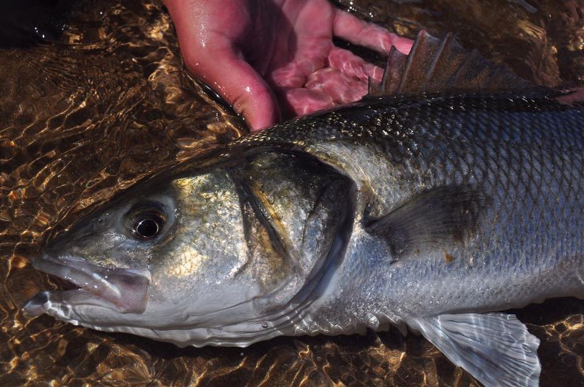
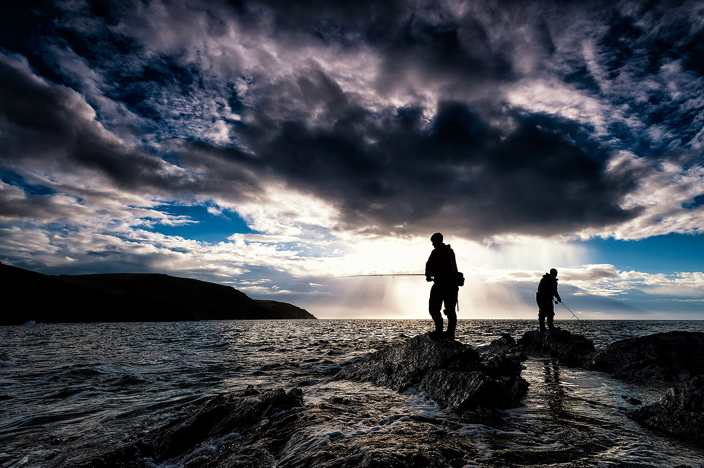
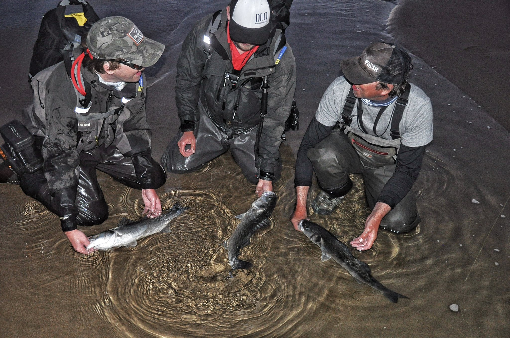

Good To Know

A Note On Fish Handling & Safety
Bass are a tough fish covered with heavy, rough scales; a bony gill cover with sharp edges and spikes; and strong, sharp spikes in the first dorsal fin. Handle them with care! Their teeth are tiny, however, so a good way to grip bass is gently by the mouth and by the tail, or supporting the belly. Check out these guidelines on how to catch-and-release fish.
Angling has very positive benefits for physical and mental health and well‑being, but as with all water sports, it is important to remember to stay safe around water. When angling, wear appropriate clothing and footwear, such as warm layers appropriate for the weather, a waterproof jacket, and strong boots when fishing from rocks. Remember to keep an eye on the tide and weather, and consider learning lifesaving skills and investing in a lifejacket. Check out these detailed guidelines from Irish Water Safety:
Bass Angling Regulations
From the mid-1970s, bass stocks declined. Recognising that bass is an economically important recreational species that is vulnerable to exploitation due to its slow-growing, long-lived life cycle, Ireland introduced a ban on commercial fishing and regulations for recreational bass angling in 1990.
Bass remains the only marine species managed exclusively for recreational angling in Irish waters. Irish bass angling regulations were recently revised to accomodate new EU Agriculture and Fisheries Council Regulations. The following regulations currently apply to recreational bass angling in Ireland:
- A license is not required to fish in the sea for bass.
- There is no longer a closed season for bass angling.
- From January 1st 2018, only catch-and-release angling is permitted for bass.
- It is prohibited to take and kill any bass caught in Irish waters.

Guides
Ireland's conservation of bass for recreational angling has encouraged its recognition as a premier bass angling destination and the development of professional guiding services, especially in the Southeast. If you are completely new to bass fishing but keen to learn more quickly, it is worth considering hiring a guide for a session. A good guide will get you started with advice on tackle, provide tuition on techniques, take you to a good bass venue and help you catch that first magic bar of silver.
Inland Fisheries Ireland maintains lists of guides and their contact details:

Sea Angling Clubs & Competitions
The Irish Federation of Sea Anglers (IFSA) is the national umbrella organisation for sea angling clubs in Ireland. They promote the sport of sea angling by organising competitions, supporting international angling teams representing Ireland and running programmes to encourage young people to try sea angling.
Joining a local sea angling club is a great way to meet fellow anglers, learn more about fishing in your area and get involved in angling meet-ups, trips and competitons. If you want to really get into bass angling, try taking part in a competition, such as the Irish Bass Festival, held annually in July in the Southeast.

Important Notice!
This website was developed as a student assignment in web design. Any errors or omissions are solely those of the author, Rory Feeney.
This website does not represent the views of Inland Fisheries Ireland, any other organisation or any other individual. I gratefully acknowledge my colleagues in Inland Fisheries Ireland and Henry Gilbey for providing information and access to images.